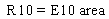
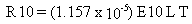
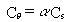

2.4 EMISSION RATE COMPUTATION
Once the various emission factors for particle suspension have been determined,
the emission rates for respirable particles can be calculated. For wind
erosion, the emission rate is calculated from the relationship

(8)
where R10 = emission rate for wind erosion (g/s)
area = area of source contamination (m2).
A climatological suspension factor, used in Cowherd et al.'s (1985) original
formulation, corrected the dispersion values in their workbook for the
fraction of suspension time. That factor is not needed in the MEPAS implementation
that computes site-specific dispersion values.
For mechanical suspension of particles from
vehicle traffic on an unpaved contaminated surfaces, the emission rate
is computed from

(9)
where R10 = emission rate caused by traffic
(g/s)
L = distance of travel over contaminated surface (km)
T = average number of vehicles traveling over the contaminated surface per day (number/day).
For a paved road, the assumption is made that 1% of the road is covered with respirable material.
The total emission rate is the sum of the wind-erosion and mechanical-
disturbance emission rates. The total emission rate is used as input to
the atmospheric dispersion, transport, and deposition model.
Subsequently, the airborne and surface pollutant concentrations resulting
from the suspension of a specific surface contaminant, q,
are computed using the following equations:

(10)
and
(11)
Sq=
aSs
where Cq
= airborne contaminant concentration (g/m3)
Cs = airborne soil concentration (g/m3)
a = mass fraction of contaminant in the suspended surface soil (g/g)
Sq = surface concentration of deposited contaminant (g/m2)
Ss = surface concentration of deposited soil material (g/m2).